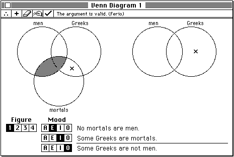

About Windows
A window is a user interface element that delimits an area on the screen in which the user can enter or view information. Here "information" is intended quite broadly; for example, an application that draws mazes and allows the user to trace a path through the maze by moving the cursor can reasonably be thought of as displaying information (the maze) and allowing the user to enter information (the desired path through the maze). As a result, virtually any interaction with the user that happens outside the menu bar and menus should occur within a window.The system software provides a wide array of types of window to accommodate the many uses they can have. Window types are distinguished by their appearance and behavior. Some windows have title bars and others do not. Some windows can be moved around on the screen by the user and others cannot. In your choice of a window type, you should be guided by the behavior your application supports in that window.
As indicated earlier in this chapter, the many types of windows are divided loosely into document windows and dialog boxes. The distinction between windows and dialog boxes is to some degree arbitrary, but in general, you use the Dialog Manager to create and manage dialog boxes and the Window Manager to create and manage document windows. The Dialog Manager essentially just provides a "front-end" to other Toolbox managers, including the Window Manager, the Control Manager, the Event Manager, and TextEdit. The Dialog Manager makes it very easy to create and handle user actions in windows containing controls, text boxes, and other dialog items. However, because dialog boxes are also windows, you might need to use some Window Manager routines as well to manipulate dialog boxes. For example, you can hide a dialog box by calling the
- Note
- You can, if necessary, define your own custom types of windows, with an appearance and behavior unlike the windows provided by the system software. For compatibility reasons, however, this practice is generally discouraged.
HideWindowroutine (there is noHideDialogroutine).When you are designing your application, you need to decide whether to use the Dialog Manager or the Window Manager to create and manage any particular window. For some types of windows, the decision is obvious. For document windows that can contain variable amounts of data and therefore probably require scroll bars and a size box, you'll want to use the Window Manager. For simple windows that contain a message and possibly a few buttons, you'll probably want to use the Dialog Manager. As a dialog box becomes more and more complex, however, you'll want to consider using the Window Manager and other Toolbox managers instead. The Window Manager provides the greatest control over the appearance and behavior of a window. In particular, any time you need to do moderately complex drawing in the window, you should probably use the Window Manager (and QuickDraw) instead of the Dialog Manager.
- Note
- For a more detailed list of factors that can effect the decision whether to use the Dialog Manager or the Window Manager (and other Toolbox managers) to manage a window, see the chapter "Dialog Manager" in Inside Macintosh: Macintosh Toolbox Essentials.
Window Parts
The Window Manager defines and supports a set of standard window elements through which the user can manipulate windows. It's important that your application follow the standard conventions for drawing, moving, resizing, and closing windows. By presenting the standard interface, you make experienced users instantly familiar with many aspects of your application, allowing them to focus on learning its unique features.The Venn Diagrammer application supports two kinds of windows, a single dialog box for setting general preferences and an unlimited number of document windows for evaluating categorical syllogisms. A sample document window is shown in Figure 6-1.
Figure 6-1 A Venn diagram window

This window contains only two special elements defined by the Window Manager, a title bar and a close box. The title bar displays the name of the window and indicates whether it's active or not. The Window Manager displays the title of the window in the center of the title bar, in the system font and system font size. If the system font is in the Roman script system, the title bar is 20 pixels high.
The close box offers the user a quick way to close a window. If the user clicks the close box, your application should react exactly as if the user had chosen the Close command from the File menu.
The window shown in Figure 6-1 also contains a number of elements that are defined and managed by the Venn Diagrammer application. Immediately under the title bar is a row of five tools, which allow the user to manipulate the Venn diagram without leaving the window. To the right of the tools is a status area, where the Venn Diagrammer application displays information and other feedback to the user. In Figure 6-1, the status area contains a message indicating that the syllogism under consideration is valid; the status area also shows the traditional name of that valid syllogism (Ferio).
- Note
- Venn Diagrammer's use of standard window elements is purposely restricted to the title bar and close box. Your application's windows should include as many of the standard window elements as are appropriate.
Underneath the tools area and the status area, the document window contains two sets of overlapping circles, which show the Venn diagram for the syllogism's premises and conclusion. The user can alter the contents of any region of overlap by clicking in that area. Shading indicates that the region is known to be empty; an X indicates that the region is known to contain something; the lack of either shading or an X indicates that the contents of the region are unknown.
The user can alter the syllogism under consideration by changing the figure of the syllogism and the mood of any of the three statements in the syllogism. Any changes in the figure or mood are instantly reflected in the syllogism shown in the bottom center of the window.
Window Records
You've already seen, in skeletal form at least, how to create a window by callingNewWindow(see Listing 1-1 on page 3). When you callNewWindow, the Window Manager creates in your application heap a new window record that contains information about the new window. The Window Manager defines a window record using theWindowRecorddata structure, shown in Listing 6-1.Listing 6-1 The
WindowRecorddata structureTYPE WindowRecord = RECORD port: GrafPort; {window's graphics port} windowKind: Integer; {class of the window} visible: Boolean; {visibility} hilited: Boolean; {highlighting} goAwayFlag: Boolean; {presence of close box} spareFlag: Boolean; {presence of zoom box} strucRgn: RgnHandle; {handle to structure region} contRgn: RgnHandle; {handle to content region} updateRgn: RgnHandle; {handle to update region} windowDefProc: Handle; {handle to window definition } { function} dataHandle: Handle; {handle to window state } { data record} titleHandle: StringHandle; {handle to window title} titleWidth: Integer; {title width in pixels} controlList: ControlHandle; {handle to control list} nextWindow: WindowPeek; {pointer to next window } { record in window list} windowPic: PicHandle; {handle to optional picture} refCon: LongInt; {storage available to your } { application} END;As you can see, a window record consists of numerous fields that contain information about the window. The first field (port) contains the window's graphics port, a drawing environment with its own coordinate system. The graphics port in turn contains information about that drawing environment, such as the location of the port on the screen, the default size and font of any text that is to be drawn in the port, and so forth.Because many of the operations you'll perform on windows are in reality operations on the window's graphics port, the Window Manager defines the data type
WindowPtras a pointer to the window's graphics port.TYPE WindowPtr = GrafPtr;For example, each time you want to draw in a window, you need to make sure that the window is the current drawing port. To do so, you can simply pass the window pointer to the QuickDraw routineSetPort.SetPort(myWindow);You can do this because a window pointer is simply a pointer to a graphics port, which is the first field in a window record. Similarly, you can determine the location of the window on the screen by inspecting theportRectfield of the graphics port. Recall that Listing 1-1 on page 3 centers the text within the window as follows:WITH gWindow^.portRect DO {set the position of the pen} MoveTo(((right - left) DIV 2) - (StringWidth(gString) DIV 2), (bottom - top) DIV 2);Usually you don't need to access or directly modify fields in a window record. If you do need to examine the fields of the window record (other than those contained in the window's graphics port), you can use theWindowPeekdata type:TYPE WindowPeek = ^WindowRecord;AWindowPeekdata type is a pointer to a window record.
- Note
- Don't get confused here. A window pointer is a pointer to the window's graphics port, not a pointer to the window record. The
WindowPeekdata type is so called because it lets you "peek" into the fields of the window record beyond the graphics port.
Window Types
ThewindowKindfield of a window record indicates the type of window that the window record describes. Your application can, if necessary, read the value in that field to determine how to handle a particular window.When the Window Manager creates a new window for a desk accessory, it places a negative value (in particular, the reference ID of the desk accessory) in the
windowKindfield of the window. In all other cases, the Window Manager puts one of two constants into that field:CONST dialogKind = 2; {dialog or alert window} userKind = 8; {window created by an application}You can rely on this behavior to determine what kind of window a given window pointer picks out. Listing 6-2 defines a functionIsAppWindowthat returnsTRUEif the application created the specified window by calling a Window Manager routine directly. In the case of the Venn Diagrammer application, this means that the window is a document window.Listing 6-2 Determining if a window is a document window
FUNCTION IsAppWindow (myWindow: WindowPtr): Boolean; BEGIN IF myWindow = NIL THEN IsAppWindow := FALSE ELSE IsAppWindow := WindowPeek(myWindow)^.windowKind = userKind; END;Notice thatIsAppWindowcoerces the window pointermyWindowto the typeWindowPeekbefore dereferencing it to examine thewindowKindfield.You can define similar functions to identify dialog boxes and desk accessory windows. Listing 6-3 defines a function
IsDialogWindowthat returnsTRUEif your application created the specified window by calling a Dialog Manager routine.Listing 6-3 Determining if a window is a dialog box
FUNCTION IsDialogWindow (myWindow: WindowPtr): Boolean; BEGIN IF myWindow = NIL THEN IsDialogWindow := FALSE ELSE IsDialogWindow := WindowPeek(myWindow)^.windowKind = dialogKind; END;Finally, Listing 6-4 defines a function IsDAccWindow that returnsTRUEif the specified window was created by a desk accessory.Listing 6-4 Determining if a window is a desk accessory window
FUNCTION IsDAccWindow (myWindow: WindowPtr): Boolean; BEGIN IF myWindow = NIL THEN IsDAccWindow := FALSE ELSE IsDAccWindow := WindowPeek(myWindow)^.windowKind < 0; END;These three functions are used extensively throughout the code samples in the remainder of this chapter.
- Note
- The
IsDAccWindowfunction is provided to help maintain compatibility with previous system software versions. When your application is running in System 7, it receives events only for its own windows and for windows belonging to desk accessories that were launched in its partition.